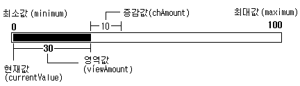

|
|||||||||
| PREV CLASS NEXT CLASS | FRAMES NO FRAMES | ||||||||
| SUMMARY: INNER | FIELD | CONSTR | METHOD | DETAIL: FIELD | CONSTR | METHOD | ||||||||
java.lang.Object
|
+--org.kwis.msp.lwc.Component
|
+--org.kwis.msp.lwc.ScrollbarComponent
ScrollBarComponent는 최대,최소값을 가지고
그 영역 내에서 값을 유동적으로 변경할 수 있는 컴포넌트입니다.
ScrollBarComponent에서는 좌우스크롤 HORIZONTAL과
상하스크롤 VERTICAL의 두가지 스크롤 방향값을 제공합니다.
이 값은 setDirection(int direction)을 통해서 지정할 수 있으며,
HORIZONTAL과 VERTICAL 이외의 값이 지정된 경우
IllegalArgumentException이 발생합니다.
스크롤 바의 값은 사용자의 키입력에 따라 값이 변경될 수도 있으며 ,setCurrentValue(int)
등의 메소드를 사용하여 스크롤 바의 위치 값을 변경할 수도 있습니다.

예를 들어 그림과 같은 크기값을 갖는 ScrollbarComponent를
생성하려면 ScrollbarComponent(int direction, int currentValue,
int viewAmount, int minimum, int maximum, int chAmount) 생성자를 사용하고,
아래와 같이 지정합니다.
scrollBar = new ScrollbarComponent(HORIZONTAL, 0, 30, 0, 100,10);

| 설명 | 기본값 | 영역 | |
|---|---|---|---|
| 방향값(direction) | 스크롤 방향.
VERTICAL와 HORIZONTAL값을
지정할 수 있고 이외의 값이 지정된 경우 IllegalArgumentException발생 |
VERTICAL |
VERTICAL
HORIZONTAL |
| 현재값(currentValue) | 현재 ScrollbarComponent의 위치값.
주의 할 점은 현재값이 실질적으로 지정될 수 있는 영역은 최대값이 아니고, 최대값과 영역값의 차이값은 최대값으로 가질 수 있습니다. |
0 | 최소값(minimum)<=현재값(currentValue)<=(최대값(maximum)-영역값(viewAmount)) |
| 영역값(viewAmount) | ScrollbarComponent에서 전체 영역중 현재
사용되는 영역의 크기값. |
1 | 0 < 영역값(viewAmount) <= (최대값(maximum) - 최소값(minimum)) |
| 최소값(minimum) | ScrollbarComponent의 최소값 |
0 | 최소(minimum)값<최대값(maximum) |
| 최대값(maximum) | ScrollbarComponent의 최대값 |
10 | 최소(minimum)값<최대값(maximum) |
| 증감값(chAmount) | ScrollbarComponent에서 방향키 입력이나과 같은 이동 액션이
발생하면 스크롤바가 움직이는 크기값. |
1 | 0 < 증감값(chAmount) <= 영역값(viewAmount) |
| Field Summary | |
static int |
HORIZONTAL
좌우 스크롤 방향값. |
static int |
VERTICAL
상하 스크롤 방향값. |
| Fields inherited from class org.kwis.msp.lwc.Component |
bg, evtListener, evtListenerObj, fg, FOCUS_NOTIFY, h, HAS_FOCUS_MASK, INPUT_MASK, KEY_NOTIFY, KEY_PRESSED, KEY_RELEASED, KEY_REPEATED, KEY_TYPED, LAYOUT_BOTTOM, LAYOUT_HCENTER, LAYOUT_LEFT, LAYOUT_RIGHT, LAYOUT_TOP, LAYOUT_VCENTER, mask, parent, POINT_DRAGGED, POINT_PRESSED, POINT_RELEASED, POINTER_NOTIFY, POS_MASK, PREFER_SIZE_MASK, prefH, prefW, SHOW_NOTIFY, SIZE_MASK, VALID_MASK, w, x, y |
| Constructor Summary | |
ScrollbarComponent()
스크롤 바의 인스턴스를 생성합니다. |
|
ScrollbarComponent(int direction)
지정한 스크롤 바의 방향값으로 스크롤 바의 인스턴스를 생성합니다. |
|
ScrollbarComponent(int direction,
int currentValue,
int viewAmount,
int minimum,
int maximum,
int chAmount)
주어진 스크롤 바의 각 크기값과 스크롤 방향값을 ScrollbarComponent
의 인스턴스를 생성합니다.
|
|
| Method Summary | |
void |
focusNotify(boolean b)
포커스를 받으면 호출됩니다. |
int |
getChangeAmount()
스크롤시 증감되는 증감값의 크기를 얻어옵니다. |
int |
getCurrentValue()
스크롤바의 현재 위치값( currentValue)을 리턴합니다. |
int |
getDirection()
현재 지정된 ScrollbarComponent의 스크롤 방향값을 리턴합니다.
|
int |
getForegroundColor()
스크롤바의 전경색을 돌려줍니다. |
int |
getMaximum()
스크롤바의 최대값을 리턴합니다. |
int |
getMinimum()
스크롤바의 최소값을 리턴합니다. |
int |
getPreferredHeight()
컴포넌트의 적절한 높이를 결정합니다. |
int |
getPreferredHeight(int w)
컴포넌트의 적절한 높이를 결정합니다. |
int |
getPreferredWidth()
컴포넌트의 적절한 폭을 결정합니다. |
int |
getViewAmount()
스크롤바의 영역크기값을 얻어옵니다. |
boolean |
keyNotify(int type,
int key)
키 입력을 받으면 호출됩니다. |
void |
paintContent(Graphics g)
내부를 칠합니다. |
void |
setChangeAmount(int newChAmount)
스크롤시 증감되는 값의 크기를 셋팅합니다. |
void |
setCurrentValue(int newValue)
스크롤바의 현재 위치값( currentValue)을 지정합니다.
|
void |
setDirection(int direction)
스크롤바의 스크롤 방향값을 지정합니다. |
void |
setForegroundColor(int fg)
스크롤바의 전경색을 지정합니다. |
void |
setMaximum(int newMaximum)
스크롤바의 최대값을 지정합니다. |
void |
setMinimum(int newMinimum)
스크롤바의 최소값을 지정합니다. |
void |
setViewAmount(int newAmount)
스크롤바의 영역크기값을 지정합니다. |
| Methods inherited from class org.kwis.msp.lwc.Component |
calcPreferredSize, canHandleInput, configure, getBackground, getCard, getForeground, getHeight, getWidth, getX, getXOnScreen, getY, getYOnScreen, hasFocus, invalidate, isShown, isValid, layout, pointerNotify, processEvent, repaint, repaint, serviceRepaints, setBackground, setEventListener, setFocus, setForeground, showNotify, toString, validate |
| Methods inherited from class java.lang.Object |
equals, getClass, hashCode, notify, notifyAll, wait, wait, wait |
| Field Detail |
public static final int HORIZONTAL
public static final int VERTICAL
| Constructor Detail |
public ScrollbarComponent()
기본값으로 상하 스크롤 방향값인 VERTICAL를 지정하고,
ScrollbarComponent의 각 크기값들은 최소값으로 '0'이 지정되고,
최대값은 '10'으로 지정합니다. 시작 위치 값은 '0'이고, 영역값은 '1',증감값은 '1'로
지정 합니다.
ScrollbarComponent(int direction),
ScrollbarComponent(int direction, int currentValue,
int viewAmount, int minimum, int maximum, int chAmount)public ScrollbarComponent(int direction)
지정할 수 있는 스크롤 방향값은 HORIZONTAL과VERTICAL이며,
이외의 값으로 지정된 경우 IllegalArgumentException이 발생 합니다.
ScrollbarComponent의 각 크기값들은 최소값으로 '0'이 지정되고,
최대값은 '10'으로 지정합니다. 시작 위치 값은 '0'이고, 영역값은 '1',
증감값은 '1'로 지정 합니다.
direction - 스크롤 바의 방향값IllegalArgumentException - 스크롤 바의 방향값이
HORIZONTAL나 VERTICAL 이외의 값으로 잘못 지정된
경우 발생.ScrollbarComponent(),
ScrollbarComponent(int direction, int currentValue,
int viewAmount, int minimum, int maximum, int chAmount)
public ScrollbarComponent(int direction,
int currentValue,
int viewAmount,
int minimum,
int maximum,
int chAmount)
ScrollbarComponent
의 인스턴스를 생성합니다.
지정할 수 있는 스크롤 방향값은 HORIZONTAL과VERTICAL이며,
이외의 값으로 지정된 경우 IllegalArgumentException이 발생 합니다.
ScrollbarComponent의 크기값은
스크롤 크기값에 설명된 영역에 맞도록 지정되어야 하며,
지정한 값이 영역에서 벗어난 경우 경우 IllegalArgumentException이
발생합니다.
direction - 스크롤 바의 방향값.currentValue - 현재 스크롤바의 위치값.viewAmount - 스크롤 바의 영역크기값.minimum - 스크롤 바의 minimum값.maximum - 스크롤 바의 maximum값.IllegalArgumentException - 스크롤 바의 방향값이
HORIZONTAL나 VERTICAL 이외의 값으로 잘못 지정된
경우 발생.IllegalArgumentException - 각 크기값에서 오류가 발생한 경우ScrollbarComponent(),
ScrollbarComponent(int direction)| Method Detail |
public int getDirection()
ScrollbarComponent의 스크롤 방향값을 리턴합니다.
VERTICAL입니다.setDirection(int direction)public void setDirection(int direction)